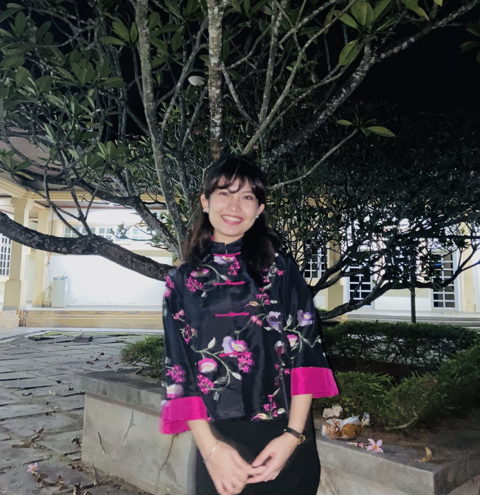
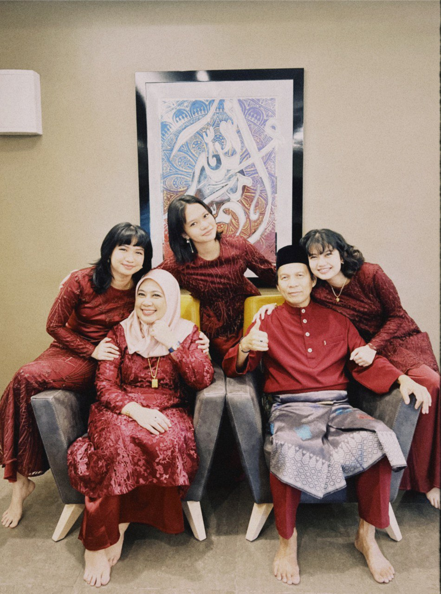
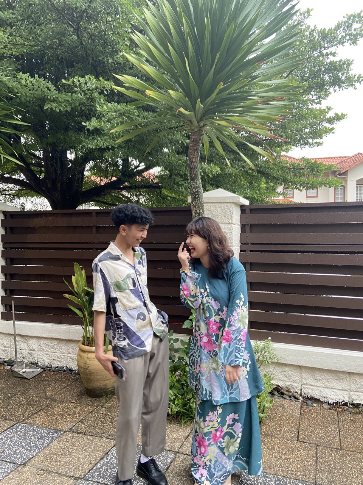
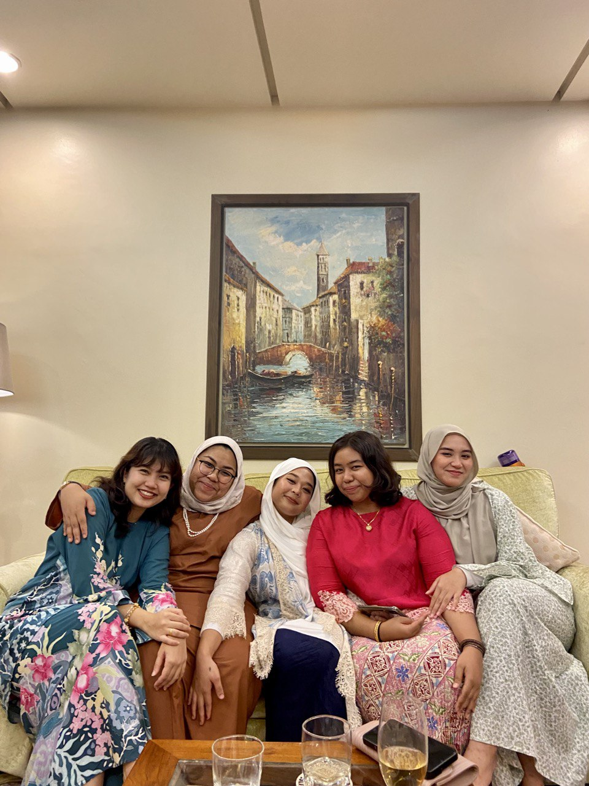
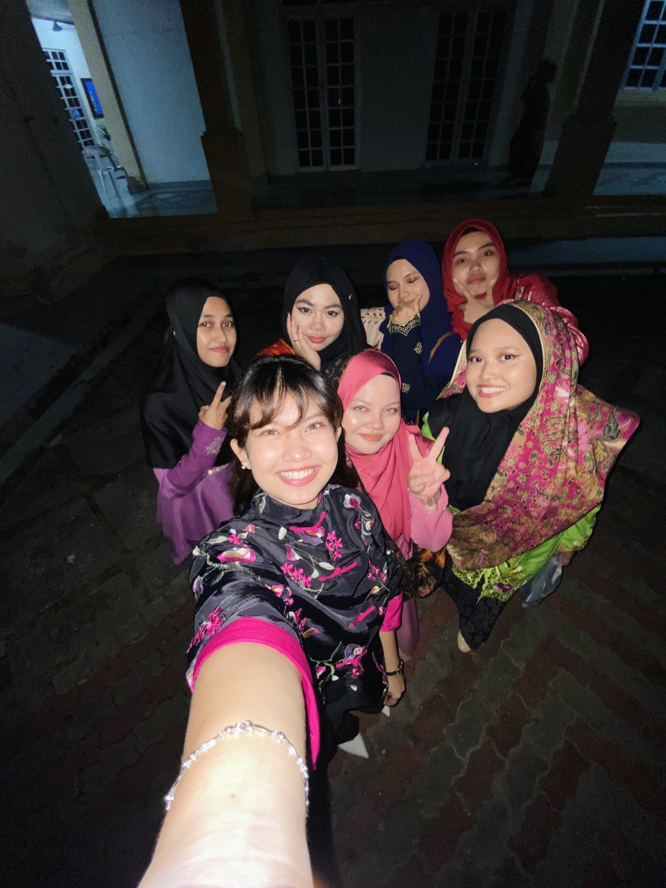

|

|
| Full Name |
Nursyazleen Nadia Binti Mohd Zamri |
| Age |
20 Years old |
| Birth Date |
14 July 2003 |
| Place of Birth |
Hospital Sunway Medical Centre, Subang Jaya |
| Race |
Malay |
| Nationality |
Malaysian |
| State |
Selangor |
| City |
Shah Alam |
| Hobby |
Love baking, drawing, painting |
About Me
Hello! I'm Nursyazleen Nadia and you can just call me Syaz! I am a student from Library Management under Information Science Studies College of Computing, Informatics and Media in Universiti Teknologi Mara (UiTM). Currently, I am on my last semester in Diploma. I will be turning 20 years old this year and I live in Bukit jelutong, which is located in Shah Alam, Selangor. I would like to decribe myself as an ambitious and driven person. I thrive on challenges and constantly set goals for myself, so I have something to strive toward. I am not comfortable with settling, and I am always looking for an opportunity to do better and achieve greatness.
|
Friends and Family
I have a close-knit group of friends and a loving family who have always been supportive of my career. They inspire me to pursue my goals and bring joy to my life. Spending quality time with them is something I cherish.
|
Image Gallery of Me, My Family and Friends
|

|
My lovely Family
Meet my family, I have 3 siblings and a loving mother and a protective father. In my siblings, I'm the second. Starting from the left, that is my eldest sister named Nursyazmeen Nabila and beside her is my mother named Siti Nursyafinah. On the middle, is my youngest sister, named Nursyazween Nadhira and beside me is my father named Mohd Zamri. Hence, my family holds a special place in my heart, and they mean the world to me. They are not only my blood relatives but also my greatest source of love, support, and companionship. Throughout my life, my family has been there for me through thick and thin, offering unwavering encouragement and guidance.
|
|
|

|
My Boyfriend
Meet my boyfriend, his name Alif. My boyfriend holds a significant place in my life, and he means the world to me. He is not only my romantic partner but also my best friend and confidant. From the moment we met, there was a special connection that grew into a deep and meaningful relationship. He brings immense joy, love, and support into my life. His presence fills my days with happiness, laughter, and a sense of belonging. We share a bond that goes beyond words, understanding each other on a level that is unique and special. With him, I feel safe, understood, and truly seen for who I am.
In him, I have found not only a partner but also a best friend who understands me in ways no one else does. We share laughter, tears, and everything in between. Our connection is deep and meaningful, and I am grateful every day to have him in my life.
|
|
|

|
My friends
Meet my friends which is beside me Syifaa, Aina, Maisarah and Intan. They are my schoolmates friends. We love to gossip and laugh like A LOT. we are easily entertained. They are not just companions but an integral part of my life, bringing immense joy, laughter, and support. We have shared countless memories, from fun adventures to comforting moments during difficult times. They understand me in ways no one else does and accept me for who I am, flaws and all.
|
|
|

|
My group course friends
Meet my University friends. In this picture we have Faten, Fasihah, Umairah, Sharina, Zulaikha and lastly Ella. They are the ones who have been there through thick and thin, offering support, laughter, and companionship. With them, I feel a sense of belonging and acceptance. Their presence in my life brings joy, shared experiences, and a strong bond that I treasure deeply. I am grateful for their friendship and the impact they have on my life.
|
|
Favorites
- Food: my favorite food is mi kolok by sarawak dishes
- Drink: Milo ais & Sirap limau ais
- Movie: White Chicks
- Hobby: love to play ukelele, baking, sketching and painting
|
My Favorite Playlist In Spotify Made By My Boyfriend :